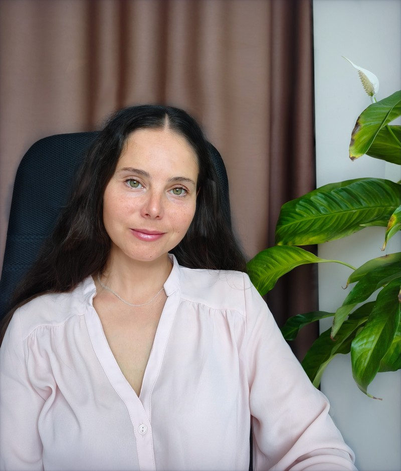

Сопровождение в образовательном и профессиональном самоопределении подростков и взрослых
Записаться
Марина Жилина
Вопросы и ситуации, с которыми я работаю
- у меня нет мотивации учиться, считаю это пустой тратой времени;
- мне нравится учиться, но я чувствую, что перегружен(а), задач слишком много, всем от меня что-то нужно, а что нужно мне?
- вокруг так много возможностей, но я не знаю, чего хочу;
- вокруг так много возможностей, и я хочу всё, не знаю, что выбрать;
- я не могу решить, куда двигаться дальше после 9 класса: колледж или 10-й класс;
- я не знаю, какой выбрать профиль в старших классах, так как не понимаю, куда мне дальше поступать;
- я не могу понять, чем хочу заниматься в будущем, какую выбрать профессию;
- кажется, я просто ленивый(ая), все вокруг куда-то двигаются, чего-то достигают, а у меня нет на это ни желания, ни энергии.
- туда ли я поступил(а)? Моя ли это профессия?
- разочарование в выбранной специальности, сомнения в эффективности дальнейшего обучения;
- синдром самозванца, мешающий начать работать по специальности во время обучения в ВУЗе;
- не справляюсь с нагрузкой, хочу всё бросить;
- сопровождение в принятии непротиворечивых решений о себе сейчас и в выстраивании возможных траекторий своего будущего.
- помощь в развитии знаний о себе и своей образовательной и профессиональной ситуации;
- помощь в принятии сложных решений по смене профессиональных векторов:
- смена работы,
- уход из найма,
- выход из декретного отпуска,
- смена профессии,
- ситуации карьерного кризиса.
- сопровождение в создании ясной и непротиворечивой картины о себе, своих способностях, целях, задачах развития, ценностях, приоритетах и амбициях.
- приглашение в работу с самооценкой и самоценностью, танцем идентичностей и ложной идентичностью.
Самоопределение — непростой путь, наполненный страхами, сомнениями и глубокой, устойчивой радостью подлинности и свободы быть собой
Условия работы
Мы встречаемся 1 раз в неделю очно или онлайн. Продолжительность и стоимость одной сессии: 80 минут/3500 руб.
В случае работы с подростками возможно сопровождение совместной встречи с родителями: 90 минут/3500 руб.
Первичная консультация онлайн — бесплатно.
Мой опыт
- Педагог для педагогов: преподаватель ВВГУ дисциплины «Индивидуализация образования, тьюторство и педагогическое сопровождение в школе».
- Наставник подростков: сопровождение учащихся средней школы в образовательном пути, психологическая помощь и поддержка, групповая и индивидуальная работа, сопровождение и консультирование родителей.
- 8 лет практики в педагогике: учитель, автор и ведущая различных образовательных курсов для учеников начальной и средней школы.
- Действующий участник регулярных групп профессиональной тьюторской интервизии и супервизии.
- Действующий участник закрытого тьюторского сообщества школы тьюторства Юлии Изотовой.
Образование
Тьютор — дипломированный специалист в области образовательного и профессионального самоопределения. Специализация и подход: сопровождение в развитии субъектности
Педагог-психолог с дополнительной специализацией в области детской психологии
Психолого-педагогическое сопровождение образовательного процесса, оказание психологической помощи детям и подросткам
Магистр в области управления персоналом. Исследовательская диссертационная работа посвящена изучению феноменов задатков, способностей, таланта и гениальности
«Ты очень повлияла на меня как на личность в лучшую сторону. Через все трудности можно пройти с позитивом, можно находить подход к любой ситуации».
Влада, 13 лет